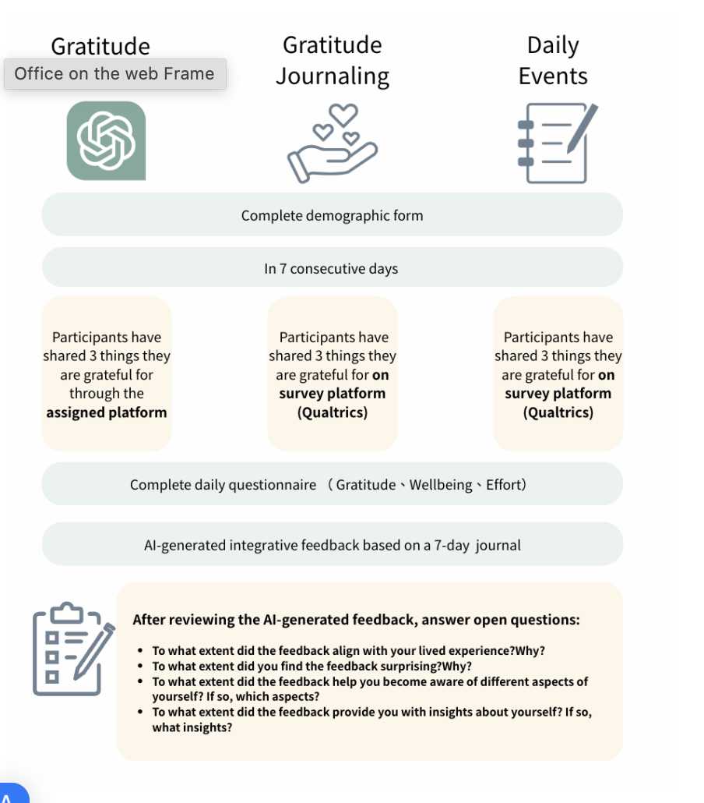

← Back to Projects
AI Gratitude Diary: Influence on Effort & Emotion (in press)
LLM Interaction
Between-Subjects Design
Behavioral Coding
本研究探討將生成式 AI (GenAI) 整合進心理健康干預時的「雙面刃」影響，特別聚焦於認知投入與干預成效之間的平衡。
Research Questions
RQ1 · Effort
認知投入程度
GenAI 如何影響參與者在感恩紀錄中投資的認知努力 (Cognitive Effort)？
RQ2 · Focus
反思深度與焦點
AI 是否改變了反思深度以及自我導向 vs 他人導向的主題焦點？
RQ3 · Efficacy
干預成效評估
對比傳統問卷組與控制組，AI 輔助紀錄在提升當下幸福感的效果差異？
RQ4 · Feedback
AI 生成回饋
接收 AI 自動化總結後，用戶產生的心理衝擊與感知價值為何？

Methodology
本研究採用了具備縱向追蹤性質的 受試者間實驗設計 (Between-Subjects Experimental Design)。
A. Participants & Groups
共計 105 位參與者 被隨機分配至以下三種實驗條件之一：
Experimental Group A
Chatbot-based: 透過 AI 聊天機器人完成感恩紀錄。
Experimental Group B
Questionnaire-based: 透過標準數位問卷進行傳統紀錄。
Control Group
Daily Event Recording: 僅記錄每日瑣事的中性任務組。
B. Procedure & Duration
- Timeframe 持續 7 天的連續實驗。
- Daily Task 每日完成指定的書寫任務。
- Measurement 每次紀錄後立即測量投入努力與幸福感。
- Post-Intervention 第 7 天收到由 AI 生成的內容總結回饋。
C. Analytical Approach
Quantitative Analysis
比較組間的努力程度與幸福感分數，驗證 認知卸載理論 (Cognitive Offloading Theory)。
Qualitative Analysis
分析參與者對 AI 總結的主觀反應，特別是其產生的「啟發感 (Inspiration)」。
Linguistic Analysis
透過行為編碼識別感恩焦點的移轉，如 AI 組中「自我導向」語言的顯著增加。